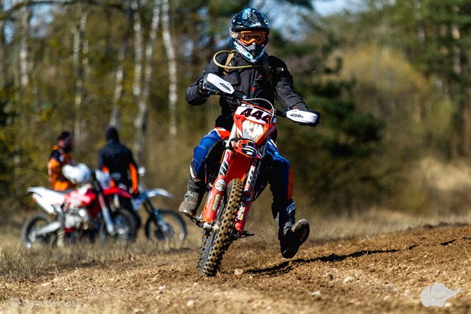

Motociklų transportavimas - motohelp.lt | Moto pagalba kelyje
 Skip to content Main Menu Pradžia Paslaugos Atsiliepimai Kontaktai +37066205229
+37066205229
Motociklų transportavimas ir pagalba kelyje
Registruokitės planuotam motociklo pervežimui
Kokybė ir pasitikėjimas
Motociklus transportuojame tinkamai ir saugiai pritvirtintus mikroautobuso viduje, todėl Jūsų plieninis žirgas pasieks kelionės tikslą saugus ir švarus.
Klientai vertiną mūsų paslaugas, todėl turime motobrolių pasitikėjimą, kurį saugome ir keliame su kiekvienu nauju ar esamu klientu.
Reikalingos motociklų transportavimo paslaugos ?
Skambinkite, jei sustojote kelyje, įvyko motoincidentas ar tiesiog pritrūkote kuro.
+37066205229Paslaugos
Mūsų komanda moto fanatikai.
Motociklų transportavimas
Transportuojame motociklus visoje Lietuvoje. Reikia nuvežti motociklą iš/į Tuvlitą? Vykstate į lenktynes? Parduodate/perkate motociklą? Persikraustote? Žiemai išvykstate? Kreipkitės mes Jums padėsime su Jūsų motociklo transportavimu!
Moto pagalba kelyje
Padedame moto bendruomenės nariams įvairiose situacijose: motoįvykis, nuleista padanga, baigėsi kuras, pasiklydote ir motociklas įstrigo sunkiai išvažiuojamame kelyje, motociklas nebeužsikuria, išsikrovė akumuliatorius? Nebėda, nes mes vsada pasirengę padėti.
Atsiliepimai
Nesitikėjau tokio operatyvumo, paskambinus vėlvyvą vakarą, Motohelp sureagavo akimirksniu ir nuvežus motociklą į garažą saugiau parvežė ir mane iki namų.
E.K.
5/5Niekam nelinkėčiau motoįvykio, bet kai jis nutinka ir toliau kelionės tęsti nesinori ir negali, rekomenduoju. Komanda be jokių pamokslų atvažiavo, įsikrovė motociklą ir mane, pavaišino vandeniu ir saugiaau gražino į namus.
Ž.K.
5/5NPirkau motociklą iš Palangos, sutariau dėl pervežimo, kitą dieną jau džiaugiausi pirkiniu Vilniuje! Super motohelp Jūs nerealūs!
K.J.
5/5Įvertinkite mūsų darbą
Google FacebookPatikėkite motociklų transportavimą Motohelp.lt
Iš meilės motociklams gimusi idėja
Previous NextSkambinkite
+37066205229
Dirbame
24/7
Sekite mus
Facebook-f Facebook-f Visos teisės saugomos © 2020 motohelp.lt | Sukurta motohelp.lt